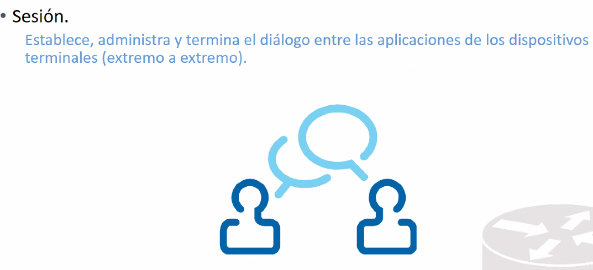

La capa 4 se encarga de que la conexion entre dos puntos fisicos.
El internet se encarga de manetener la conexion y comunicacion entre las aplicaciones.
Te va a permitir que sigas dentro de la applicacion.
La capa 4 es hardware y la capa 5 es software.